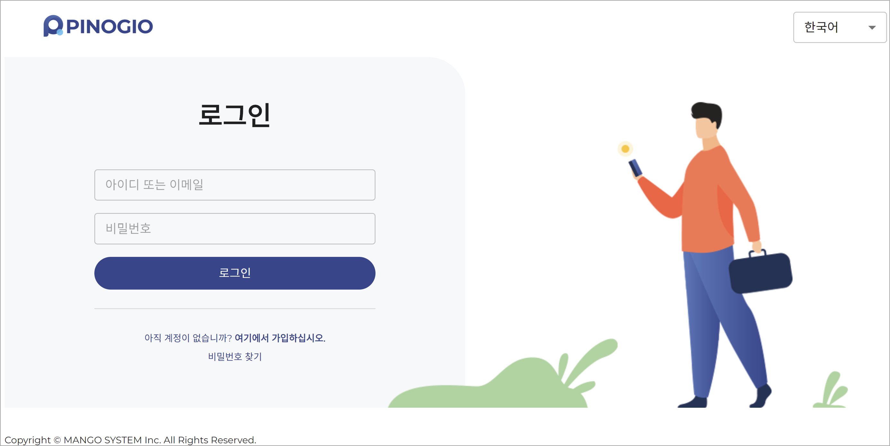
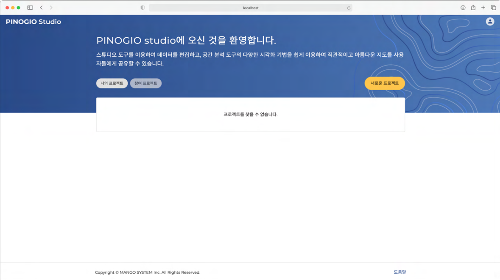
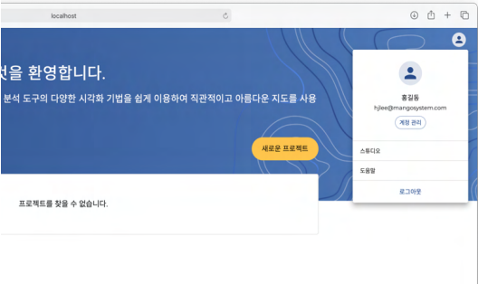
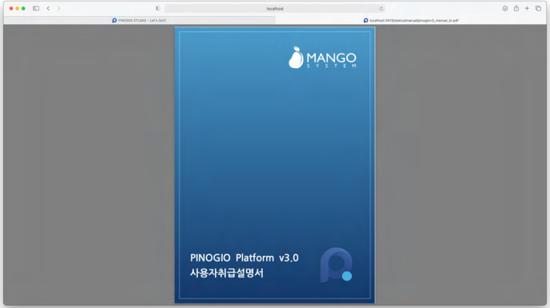
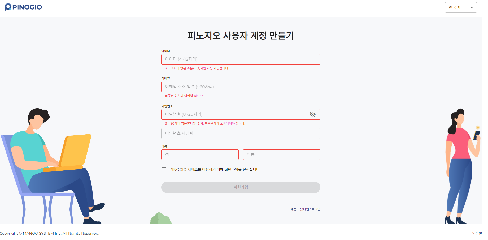

시작
피노지오를 사용하기 위해 웹 브라우저를 실행하여 접속 주소를 입력한 후 로그인 페이지로 이동합니다. 아래의 내용은 피노지오 사용자 계정을 만들고 로그인, 로그아웃 하는 방법에 대해 설명합니다.
피노지오에 로그인
아이디 또는 이메일 : 피노지오에 가입한 ID 또는 이메일을 입력합니다.
비밀번호 : 피노지오에에 가입할 때 기입한 비밀번호를 입력합니다.
로그인 을 클릭합니다.
로그인시 입력되는 사용자 패스워드는 SHA-256으로 암호화되어 서버에 전달되기 때문에 안심하셔도 됩니다.
참고
아직 계정이 없습니까? 여기에서 가입하십시오.
사용자 계정을 만드는 페이지로 이동합니다. 이 내용은 아래에 다시 설명 합니다.
경고
“비밀번호 찾기”
피노지오에서 비밀번호를 분실 했을 경우 관리자에게 문의 합니다. 관리자는 확인 후 계정을 만들 때 등록한 이메일로 임시 비밀번호를 전달합니다.
도움말
화면 오른쪽 하단의 도움말을 클릭하면 피노지오 도움말을 확인할 수 있습니다.
쿠키
로그인이 성공하면 사용자 권한을 확인할 수 있는 Access Token이 발급되고 사용자 정보가 암호화되어 브라우저 쿠키에 저장됩니다. 사용 중 바이러스 백신이나 관련 소프트웨어로 인한 외부 원인, 또는 브라우저 캐시를 삭제하면 쿠키가 삭제될 수 있습니다. 이런 경우 로그인 상태가 유지되지 않을 수 있습니다.
로그인 후 초기 화면
로그인이 정상적으로 처리되면 PINOGIO Studio (이하 피노지오 스튜디오) 메인 페이지로 이동합니다. 이 페이지에서는 프로젝트 목록을 확인하고 선택하거나 새로운 프로젝트를 만들 수 있습니다. 프로젝트와 관련된 자세한 내용은 아래 프로젝트 설명에서 자세히 다루겠습니다.
로그아웃
로그인 후 로그아웃 하지 않을 경우 일정기간 로그인 상태가 유지됩니다.
로그아웃 하는 방법은 아래와 같습니다.
오른쪽 상단의 사람모양아이콘 을 클릭합니다.
로그아웃을 클릭합니다.
도움말
피노지오 사용 방법을 도움말 메뉴를 통해서 확인할 수 있습니다.
사람모양아이콘 클릭시 표시되는 팝업창, 프로젝트 목록 페이지 하단, 로그인, 회원가입 페이지에서 도움말 링크 메뉴를 클릭하면 도움말페이지로 이동할 수 있습니다.
사용자 계정 만들기
피노지오 사용자 계정을 만드는 페이지입니다. 아래의 항목과 규칙에 따라 정보를 입력하여 새로운 계정을 만들 수 있습니다. 아이디, 이메일 주소는 고유의 값으로 사용자를 구별합니다. 이메일을 정확히 입력해야 비밀번호 분실 시 관리자를 통해 임시 비밀번호를 발급 받을 수 있습니다.
아이디 입력란에 아이디를 입력합니다. (영문 소문자, 숫자 4~12자리)
이메일 입력란에 이메일을 입력합니다. (이메일 형식, 64자리 이하)
비밀번호 입력란에 비밀번호를 입력합니다. (영문 대소문자, 숫자, 특수문자 포함, 공백포함 안됨, 8~20 자리)
비밀번호 재입력 에 위에 입력한 비밀번호를 한번 더 입력하여 확인 합니다.
성 입력란에 이름(성) 을 입력합니다. (한글, 영문 대소문자,1~20자리)
이름 입력란에 이름(이름) 을 입력합니다. (한글, 영문 대소문자, 1~20자리)